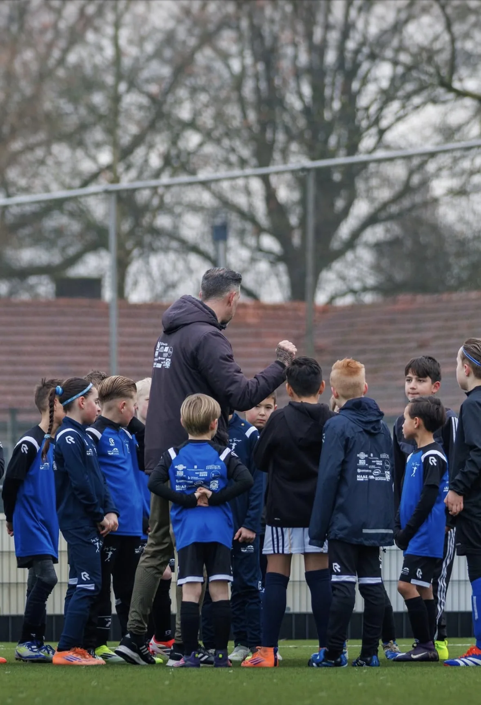
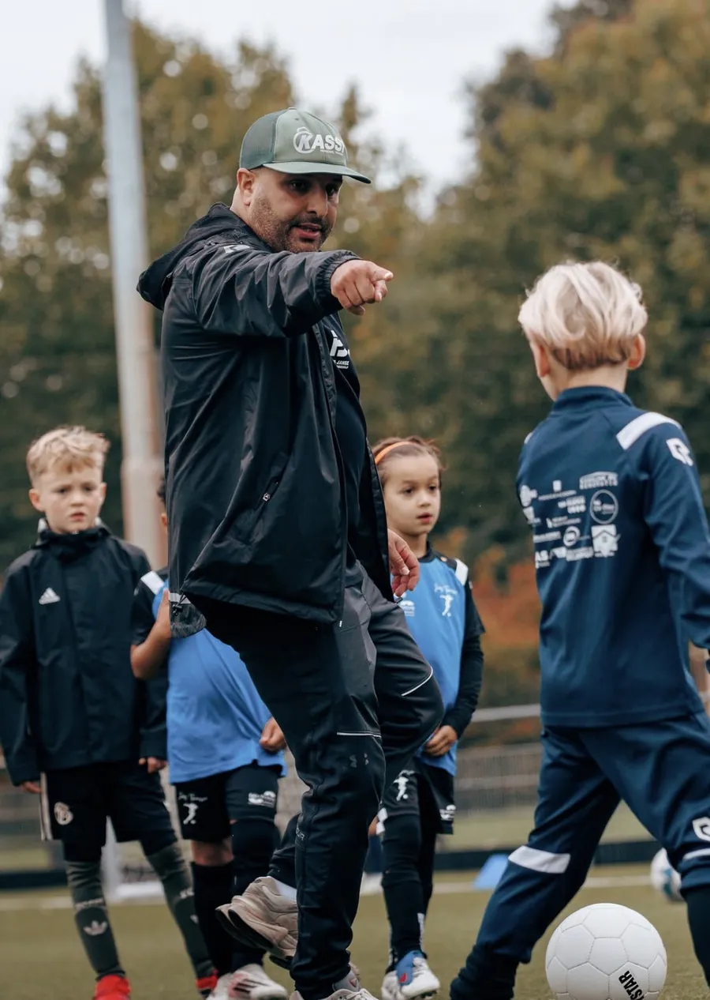
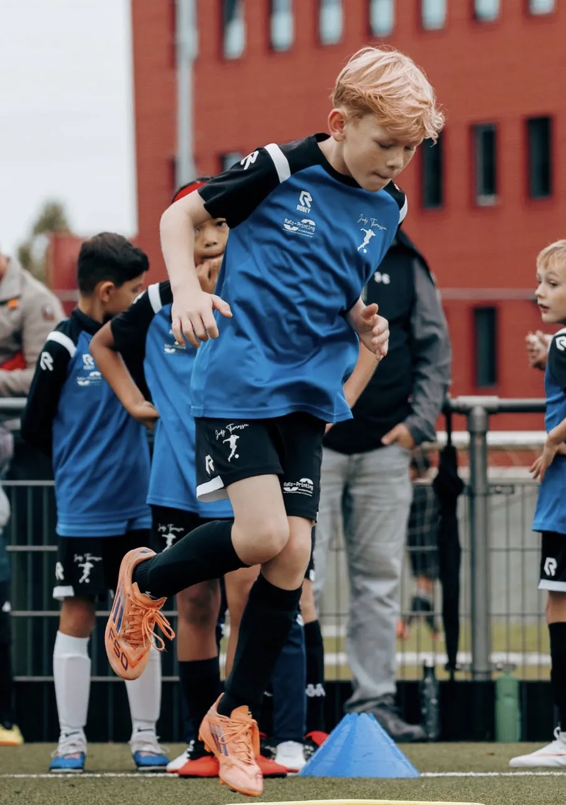
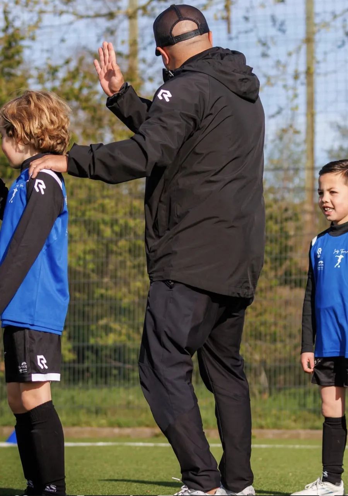
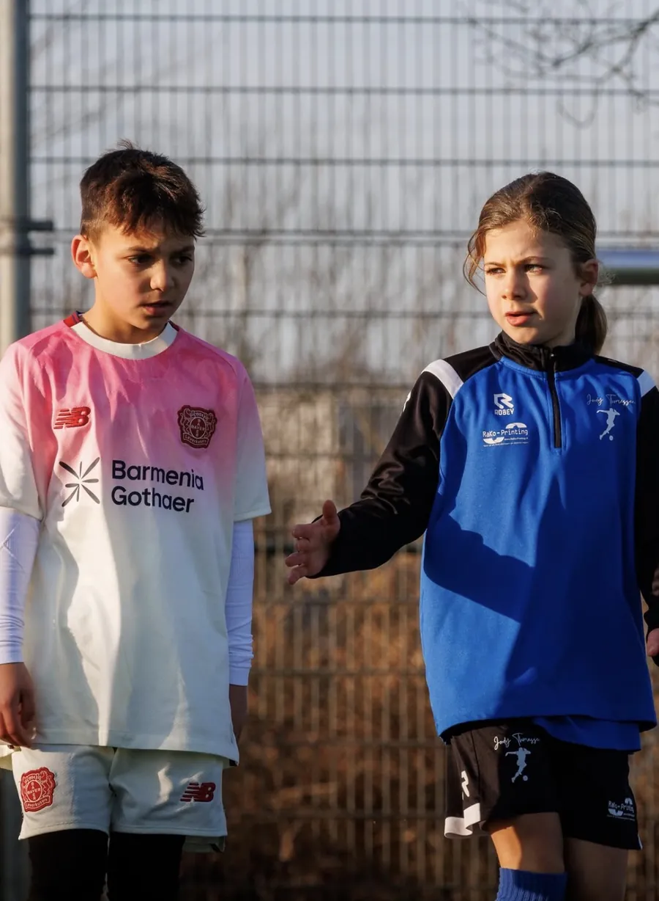
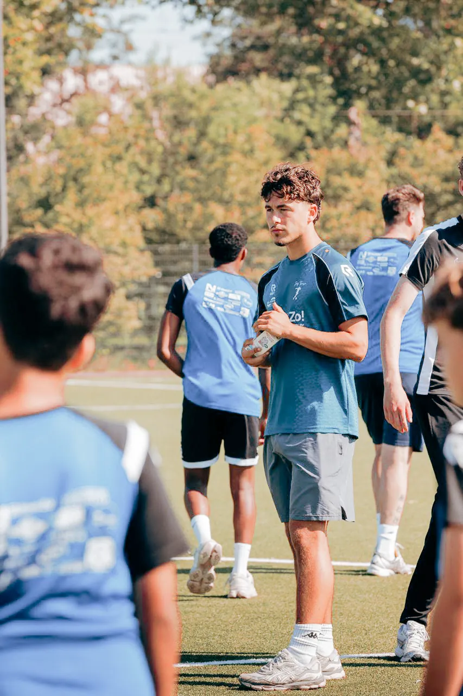
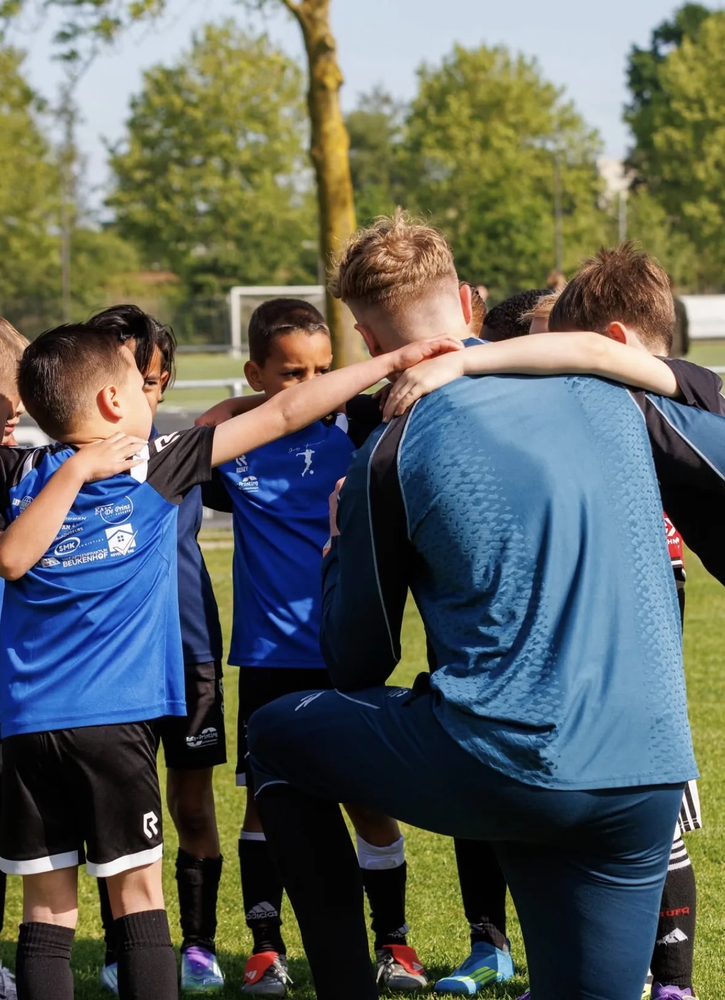

Groepstraining
125 euro per 3 maanden
- Elke week een uur training
- Groep op leeftijd en niveau
- Per kwartaal, opzegbaar
- Eerste training gratis

Trainingen en tarieven


01 · Groepstraining
Techniek, duels, snelheid en inzicht: in een uur komt alles voorbij, in een groep van hetzelfde niveau.
Jordy deelt elke speler zelf in. Zo trainen beginners met beginners en gevorderden met gevorderden, en leert iedereen omgaan met weerstand die bij zijn niveau past.
02 · Privétraining
1-op-1 of 1-op-2, met een trainingsplan dat helemaal om jouw doelen draait.
Wil je sneller worden, sterker in de duels, of juist beter aan de bal? Samen met de trainer stel je een plan op en werk je daar gericht naartoe. Ouders schrijven op Trustpilot dat hun kind hier graag met verschillende trainers 1-op-1 traint en er enorm veel van leert.




03 · Damesvoetbal
Meiden trainen mee in de groepen op hun leeftijd en niveau, en er zijn Ladies Only-clinics speciaal voor hen.
De Ladies Only-profdagen zijn al meerdere keren georganiseerd en zitten steeds vol. Op 21 oktober is de volgende editie op BVV, met scouts van verschillende clubs langs de lijn.
04 · BVO-training
Voor spelers die al bij een betaaldvoetbalorganisatie spelen en alles op alles willen zetten.
Samen stellen we een plan op dat past bij jouw ambities. Je kiest tussen intensieve 1-op-1 trainingen of groepssessies met andere BVO-spelers, waarin je elkaar scherp houdt. Jordy en zijn trainers weten uit eigen ervaring wat er in een jeugdopleiding van je wordt gevraagd.


Uit de trainingen
Twee oefeningen zoals Jordy en de trainers ze op het veld uitleggen. Klik om met geluid te kijken.
Tarieven
Geen inschrijfgeld. De eerste training is altijd gratis.
Afmelden voor een training kan tot 24 uur van tevoren. Spelers trainen in het blauwe tenue van de voetbalschool, verkrijgbaar via de webshop.
Veelgestelde vragen
Vanaf 4 jaar. De groepen zijn ingedeeld op leeftijd en niveau, dus je kind traint altijd met leeftijdsgenoten van vergelijkbaar niveau.
125 euro per 3 maanden voor wekelijks een uur training. Het bedrag wordt per kwartaal geïncasseerd tot je opzegt. De eerste training is een gratis proefles.
Zondag tot en met donderdag op Sportcomplex BVV (Victorialaan 20, Den Bosch) en vrijdag bij sv CHC (De Fuik 10, Den Bosch). De tijd hangt af van de leeftijdsgroep en hoor je bij de proefles.
Nee. De trainingen zijn voor iedereen met plezier in voetbal, van beginner tot BVO-speler. Speelt je kind al bij een club, dan is de training een aanvulling op de clubtraining.
Meld je kind minimaal 24 uur van tevoren af. Een training die niet op tijd is afgemeld vervalt en kan niet worden ingehaald.
Spelers trainen in het blauwe tenue van de voetbalschool (shirt en broekje), verkrijgbaar via de webshop. Bij de proefles mag je kind gewoon in eigen sportkleding komen.

Eerst proberen
Je hoort binnen 24 uur wanneer de groep van jouw kind traint.
Wil je een gratis proefles plannen of heb je een vraag over de trainingen? Stuur een berichtje, je krijgt binnen 24 uur antwoord van het team.
Chat openen